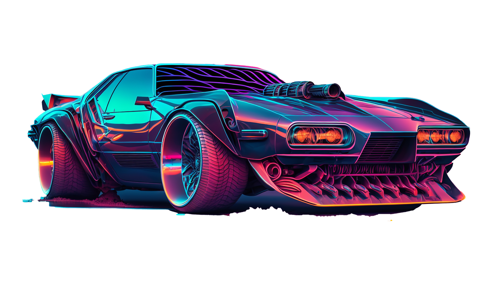

Our Services
Discover our range of cutting-edge services...
Discover our range of cutting-edge services...
Two-wheeler vehicles often face breakdowns due to issues like flat tires, engine malfunctions, or electrical problems.
Three-wheeler vehicles can experience breakdowns from common causes like engine failure, brake issues, or transmission problems.
Four-wheeler vehicles typically break down due to engine trouble, electrical system failures, or issues with the fuel system.